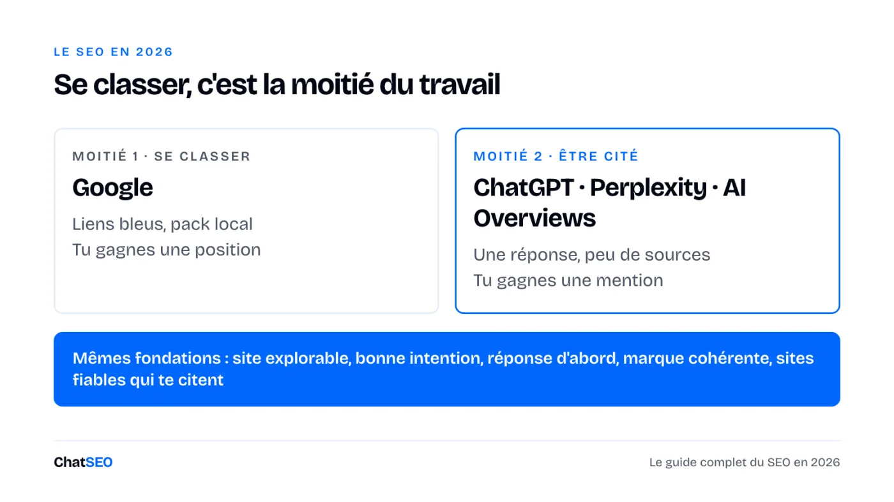
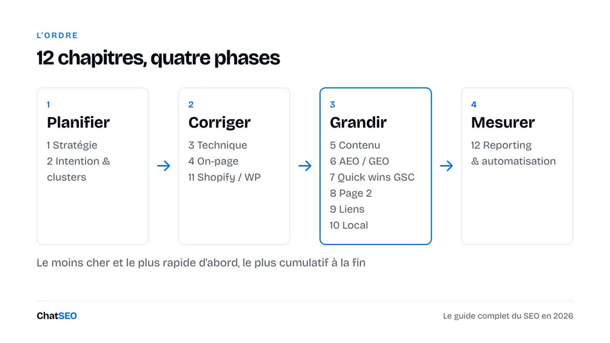
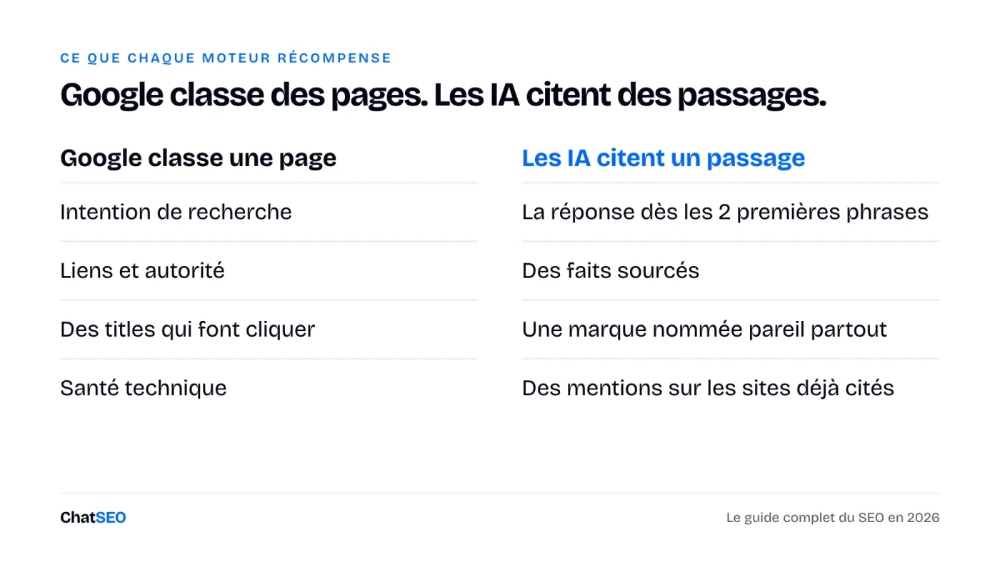
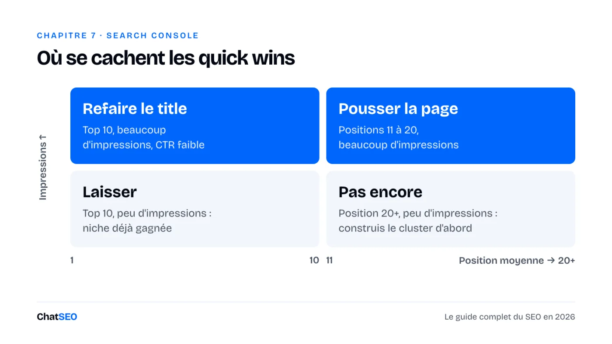
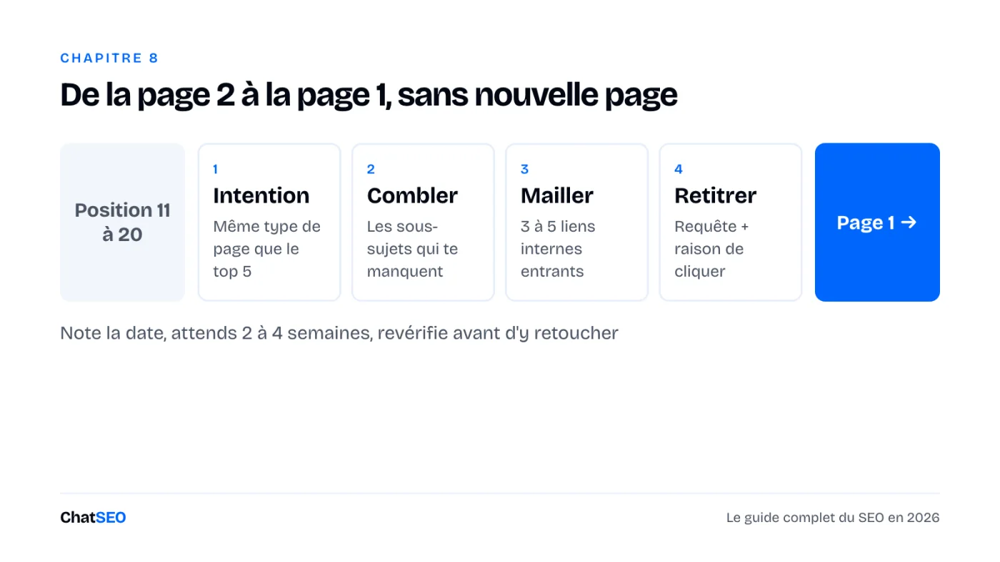

Arrête de traiter le SEO comme « publier des articles et attendre ». Te classer sur Google, c'est la moitié du travail. L'autre moitié, c'est te faire citer par ChatGPT, Perplexity et les AI Overviews. Douze chapitres, chacun avec sa checklist d'audit et le prompt ChatSEO qui fait le travail, plus les filtres Search Console, des templates modifiables et des workflows hebdo.
ChatSEO, l'agent SEO connecté à ta Search Console · 🎁 7 jours offerts
Tes clients cherchent toujours sur Google. Ils posent aussi la question à ChatGPT, à Perplexity et à l'AI Overview en haut des résultats, et ces réponses ne citent qu'une poignée de sources. Si tu n'en fais pas partie, tu n'existes pas dans la réponse.

La bonne nouvelle : les deux moitiés reposent sur les mêmes fondations. Un site que Google peut explorer, des pages qui collent à l'intention et répondent dès les premières lignes, une marque nommée pareil partout, et des mentions sur les sites que ces moteurs jugent déjà fiables. Ce guide les traite dans l'ordre qui rapporte le plus vite.

Tu n'as qu'une heure ? Fais les chapitres 7 et 8. Ils travaillent sur le trafic que Google te donne déjà, donc ce sont eux qui bougent le plus vite.
La plupart des projets SEO échouent avant le premier mot-clé : pas d'objectif, pas de point de départ, et une liste de 300 mots-clés que personne ne peut traiter. Choisis un objectif business, prends une photo datée, puis classe les mots-clés selon ce qu'ils peuvent rapporter, pas seulement selon leur volume.
Checklist d'audit
Construis mon point de départ SEO pour [URL du site], daté d'aujourd'hui, à partir de la Search Console (28 derniers jours vs les 28 précédents) : clics, impressions et position moyenne, séparés marque et hors marque, et les 10 pages qui apportent le plus de clics hors marque. Liste ensuite les 20 mots-clés à prioriser ce trimestre pour [objectif : leads / ventes / inscriptions], notés sur le volume, ma position actuelle et la proximité avec une vente. Un seul tableau. N'utilise que des chiffres issus des données. S'il en manque un, dis-le.
Un mot-clé ne vaut la peine que si tu le vises avec le type de page que Google affiche déjà. « Meilleur X » attend un comparatif, « X près de chez moi » une page locale, « comment faire » un guide. Regroupe ensuite les mots-clés en clusters : une page pilier et les pages satellites qui pointent vers elle. Google et les IA font confiance aux sites qui couvrent un sujet en entier.
Checklist d'audit
Construis un cluster thématique pour [sujet] sur [URL du site] : une page pilier et jusqu'à 12 pages satellites. Pour chacune : mot-clé cible, intention de recherche, type de page utilisé par les 5 premiers résultats, et si une page existe déjà sur mon site (donne l'URL) ou s'il faut la créer. Signale toute paire de pages qui se battent pour le même mot-clé. Utilise uniquement de vraies données de mots-clés et de Search Console.
Tu n'as pas besoin d'un audit de 200 lignes. Tu as besoin des quelques problèmes qui empêchent tes pages importantes d'être explorées, indexées ou chargées vite. Les rapports Pages et Core Web Vitals de la Search Console t'en donnent l'essentiel, gratuitement.
Checklist d'audit
Fais un contrôle SEO technique de [URL du site] : statut d'indexation de mes 20 pages principales, sitemap, robots.txt (y compris les robots IA), redirections, liens internes cassés et Core Web Vitals sur mobile. Ne remonte que les problèmes qui touchent des pages avec du trafic, classés par impact, avec la correction pour chacun. Ne liste rien que tu ne peux pas confirmer par l'exploration ou la Search Console.
Le title, c'est la ligne qui décide du clic. La meta description, c'est la deuxième chance. Les liens internes disent à Google quelles pages comptent. Les trois peuvent changer cet après-midi, sans écrire une seule nouvelle page.
Checklist d'audit
TITLE [Mot-clé principal] : [bénéfice ou angle précis] ([année / chiffre / preuve]) ex. Chaussures de running pied plat : 9 paires testées sur 300 km (2026) META DESCRIPTION [Ce que la page apporte] pour [qui]. [Une preuve ou un détail]. [Ce qu'on peut faire ensuite]. ex. Les 9 chaussures de running qu'on a testées pour pieds plats, classées par maintien. Vrais kilomètres, vrais prix. Trouve ta paire en 2 minutes.
Audite le SEO on-page de mes 15 pages avec le plus d'impressions sur [URL du site]. Pour chacune : title et meta description actuels, la requête qui apporte le plus d'impressions, et une réécriture alignée sur cette requête. Liste ensuite les pages orphelines ou mal maillées et propose 3 liens internes pour chacune, avec la page source et l'ancre. Montre l'actuel et le proposé côte à côte. Attends ma validation avant de modifier quoi que ce soit.
La même page doit faire deux métiers : satisfaire l'internaute assez pour se classer, et contenir des passages qu'une IA peut reprendre et citer. Ces passages sont courts, répondent directement à la question et donnent des faits avec leur source. Écris le brief avant l'article.
Checklist d'audit
Mot-clé cible : Intention (s'informer / comparer / acheter / local) : Lecteur : qui il est, ce qu'il sait déjà Type de page des 5 premiers résultats : La question à laquelle la page répond dans ses 2 premières phrases : H2 (sous forme de questions) : 1. 2. 3. Ce qu'on apporte que les 5 premiers n'ont pas (nos données, test, exemple) : Faits à sourcer : Liens internes : depuis [pages] vers cette page, depuis cette page vers [pages] Appel à l'action :
Rédige un brief de contenu pour [mot-clé] sur [URL du site] en suivant le template de brief : intention, type de page et H2 des 5 premiers résultats, questions que les gens posent, ce que ces résultats ratent, et liens internes à ajouter. Compare ensuite ma page existante [URL de la page] à ce brief et liste ce qu'il faut changer pour qu'elle se classe et puisse être citée par les IA. N'invente aucune statistique.
L'AEO (answer engine optimisation) et le GEO (generative engine optimisation), c'est la même idée : être la source qu'une réponse d'IA cite. Commence par mesurer où tu en es. Pose les questions que tes clients posent, et regarde qui est cité et quels sites servent de sources.

Checklist d'audit
Vérifie la visibilité de [marque] dans la recherche IA sur [catégorie / ville]. Écris les 10 questions qu'un acheteur poserait à un assistant IA, puis indique pour chacune : si ma marque est citée, quels concurrents le sont, et quelles pages ou quels sites sont cités comme sources. Termine par les 5 sources les plus citées et ce qu'il me faudrait pour apparaître sur chacune. Ne rapporte que ce que montrent les résultats.
Pourquoi un guide ne suffit pas. Cette page te donne la méthode, les filtres et les prompts. Elle ne peut pas lire ta Search Console, explorer ton site ni vérifier cette semaine si ChatGPT te cite. ChatSEO le fait, sur tes vraies données, et publie les corrections que tu valides sur WordPress ou Shopify. Les 7 premiers jours sont offerts.
Un quick win, c'est une page que Google affiche déjà mais sur laquelle personne ne clique, ou une requête sur laquelle tu sors sans avoir de page faite pour elle. Tout est dans la Search Console, rapport Performances sur les résultats de recherche. Mets la période sur 3 mois, coche les quatre métriques, puis applique un filtre à la fois.

Filtre 1 · Les pages que Google affiche mais où personne ne clique. Onglet Pages, filtre du tableau Position inférieure à 10, tri par impressions. Toute page avec un CTR bien plus bas que ses voisines a besoin d'un nouveau title (chapitre 4).
Filtre 2 · Les requêtes en page 2. Onglet Requêtes, filtre du tableau Position supérieure à 10, tri par impressions. Le haut de cette liste, c'est le chapitre 8.
Filtre 3 · Les requêtes en question (de la matière pour des blocs FAQ et des réponses citables par les IA). Nouveau filtre → Requête → Personnalisé (expression régulière), « Correspond à » :
^(comment|pourquoi|quand|où|combien|quel|quelle|quels|quelles|qui|que|est-ce|peut-on|faut-il)\s|^qu'
Filtre 4 · Hors marque uniquement (le trafic que le SEO a vraiment gagné). Requête → Personnalisé (expression régulière), « Ne correspond pas à », avec ta marque et ses fautes de frappe :
tamarque|ta marque|tamarqe|tamarque\.fr
Filtre 5 · Les requêtes longue traîne (cinq mots ou plus : intention précise, facile à satisfaire avec une seule section). Requête → Personnalisé (expression régulière), « Correspond à » :
^(\S+\s+){4,}\S+$
Filtre 6 · Les pages qui perdent des clics. Date → Comparer → 3 derniers mois vs période précédente, onglet Pages, tri par écart de clics. Corrige les plus grosses baisses avant d'écrire quoi que ce soit de nouveau.
Trouve mes quick wins Search Console pour [URL du site] sur les 3 derniers mois : (1) les pages du top 10 avec un CTR bien en dessous de leur position, (2) les requêtes en positions 11 à 20 avec le plus d'impressions, (3) les requêtes en question sur lesquelles je sors sans section qui y répond, (4) les pages qui ont perdu le plus de clics vs les 3 mois précédents. Donne-moi les 10 meilleures opportunités dans un seul tableau, chacune avec la page, la requête, les chiffres et le changement à faire. N'utilise que les données de la Search Console.
La position 11 ne reçoit presque rien. La position 8 reçoit de vrais clics. Une page entre 11 et 20 te dit que Google la trouve déjà pertinente : il lui manque juste un coup de pouce. Et ce coup de pouce n'est presque jamais une nouvelle page.

Pas à pas
Prends mes 5 pages de [URL du site] avec le plus d'impressions en positions 11 à 20 (Search Console, 3 derniers mois). Pour chacune : la requête principale, si mon type de page correspond aux 5 premiers résultats, les sous-sujets qu'ils couvrent et pas moi, 3 liens internes à ajouter depuis mes pages plus fortes, et un nouveau title. Classe-les par gain de clics attendu. Montre-moi le plan avant de modifier quoi que ce soit.
Les liens font toujours bouger les classements, et les mentions décident des marques que les IA citent. Les meilleurs prospects pointent déjà vers tes concurrents ou les citent. Le meilleur atout RP, c'est un chiffre que personne d'autre n'a.
Checklist d'audit
Objet : [titre de son article] + un ajout Bonjour [prénom], J'ai lu [titre de l'article]. [Une chose précise qui t'a plu, en une phrase.] Vous parlez de [sujet]. On vient de publier [ta ressource], avec [le fait ou le chiffre qu'il n'a pas]. Si c'est utile pour vos lecteurs, ça trouverait sa place juste après « [sa phrase] ». Dans tous les cas, merci pour l'article. [Ton nom]
Trouve des prospects de liens pour [URL du site] face à [concurrent 1] et [concurrent 2] : les sites qui font un lien vers au moins l'un d'eux et pas vers moi, à partir de vraies données de backlinks. Garde les 20 plus pertinents pour [sujet], écarte le spam et les vendeurs de liens, et donne-moi pour chacun la page qui fait le lien et un angle d'approche en une ligne.
Si tu sers une ville, le pack local et ta fiche Google Business Profile comptent souvent plus que ton site. La méthode complète est dans le playbook SEO local ; voici l'essentiel.
Checklist d'audit
Audite mon SEO local pour [nom de l'entreprise] à [ville] : la catégorie de ma fiche Google Business Profile, ma position dans le pack local sur [service principal] + [ville], la cohérence de mon nom, adresse et téléphone sur les annuaires, et si j'ai une page par service et par ville. Classe les corrections par impact attendu. Écris « introuvable » quand tu ne peux pas vérifier quelque chose.
Les deux plateformes se classent très bien. Chacune a quelques réglages par défaut qui coûtent du trafic sans bruit.
Checklist Shopify
/collections/x/products/y. Vérifie que ton thème pointe vers l'URL canonique /products/y.Checklist WordPress
Mon site [URL du site] tourne sous [Shopify / WordPress]. Vérifie-le face aux problèmes SEO classiques de cette plateforme : URL en double ou non canoniques, titles et meta descriptions manquants sur les produits, collections ou articles, pages d'archives pauvres indexées, images sans texte alternatif, et templates lents. Liste ce que tu trouves, classé par impact sur le trafic, avec la correction pour chacun. Ne rapporte que ce que tu peux confirmer.
Un rapport est utile quand il se termine par une décision. Automatise la lecture et la rédaction ; garde les décisions et la vérification finale.
Checklist d'audit
RAPPORT SEO · [mois] 1. Chiffres (vs mois dernier) Clics hors marque : [n] ([+/- %]) Impressions : [n] ([+/- %]) Conversions organiques : [n] ([+/- %]) Cité dans les réponses IA : [x] sur [10] questions d'acheteur 2. Ce qui a bougé En hausse : [page], [requête], [pourquoi] En baisse : [page], [requête], [pourquoi] 3. Ce qu'on a publié [date] · [page] · [changement] 4. Le mois prochain, dans l'ordre 1. 2. 3.
Rédige mon rapport SEO mensuel pour [URL du site] à partir de la Search Console et de GA4, en suivant le template de rapport : clics hors marque, impressions et conversions organiques vs le mois dernier, les 5 pages qui ont le plus gagné et les 5 qui ont le plus perdu (avec les requêtes derrière le changement), et 3 actions pour le mois prochain, dans l'ordre. Une page maximum. N'utilise que des chiffres issus des données.
Les chapitres, c'est la méthode. Voici les routines qui la transforment en résultats.
Semaine 1 (environ 3 heures, une seule fois). Point de départ (chapitre 1) → contrôle technique (chapitre 3) → contrôle plateforme (chapitre 11) → les six filtres GSC (chapitre 7). Tu finis la semaine avec une liste de corrections classée.
Chaque lundi (30 minutes). Ce qui a bougé la semaine dernière → choisir 3 actions → les publier une page à la fois dans la semaine, après relecture → noter chaque changement.
Chaque mois (1 heure). Le rapport (chapitre 12) → la visibilité IA (chapitre 6) → une page poussée hors de la page 2 (chapitre 8) → un nouveau contenu ou une campagne de liens (chapitres 5 et 9).
Donne-moi la liste d'actions SEO de la semaine pour [URL du site] : compare la semaine dernière à celle d'avant dans la Search Console, repère les pages et requêtes qui ont bougé, et liste les 3 actions les plus susceptibles d'apporter des clics cette semaine, chacune avec la page, le changement et pourquoi. N'inclus rien que les données ne soutiennent pas.
Connecte ta Search Console une fois. Colle ensuite les prompts ci-dessus, un chapitre à la fois, et valide ce que ChatSEO propose. 7 jours offerts, sans engagement.
Commencer mon essai gratuit 7 jours →